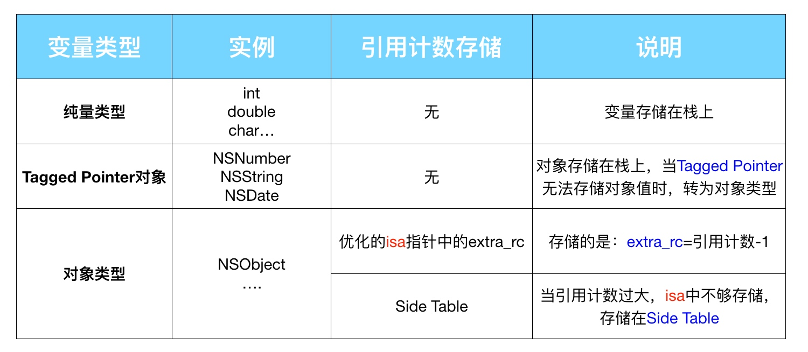
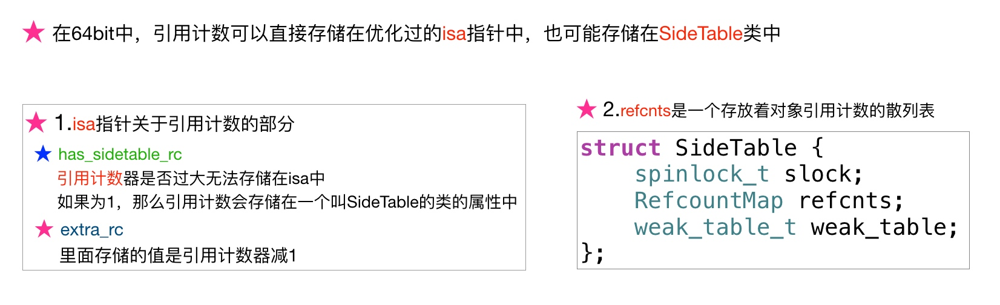
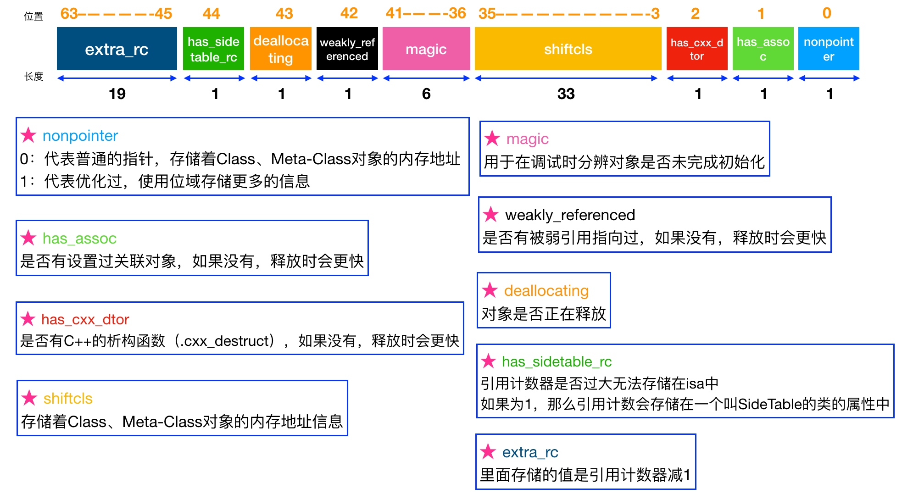
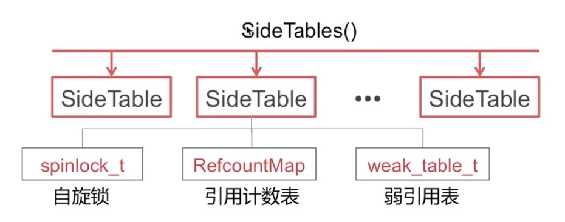
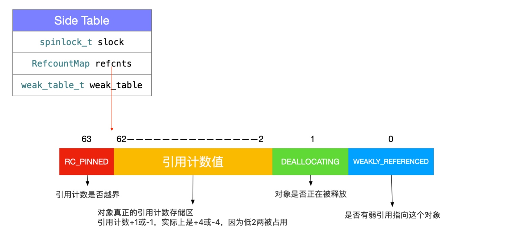
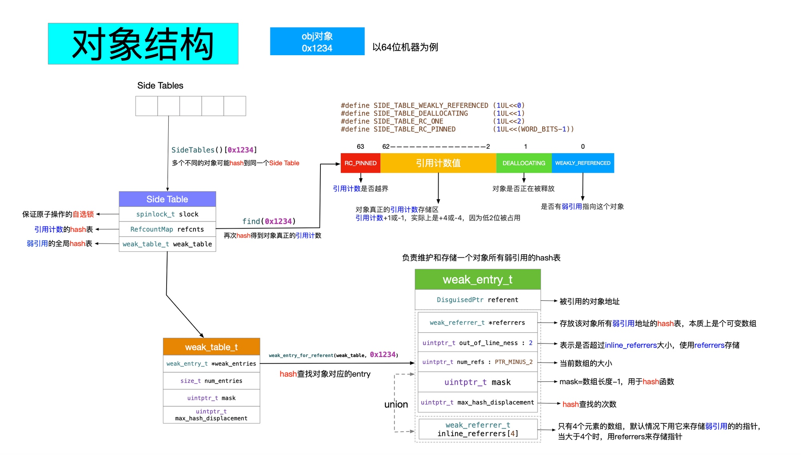
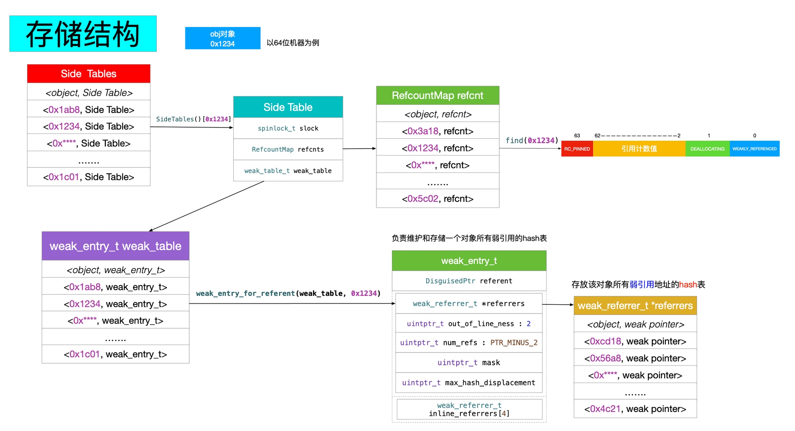

Reference Counting
说明
LLVM 的关于 ARC 的说明，非常长。
引用计数原理
引用计数如何存储：
- 如果是 Tagged Pointer ，会直接使用其指针值作为引用计数返回；
- 如果是 64位和 Objective-C 2.0 ，就会使用
isa的部分空间来存储引用计数； - 如果
isa部分空间不够存储引用计数，或者不是 64位和 Objective-C 2.0 ，就会使用散列表和SideTable来存储。
获取引用计数：
inline uintptr_t
objc_object::rootRetainCount()
{
assert(!UseGC);
// 1. 如果是 Tagged Pointer ，则直接返回指针地址
if (isTaggedPointer()) return (uintptr_t)this;
sidetable_lock();
isa_t bits = LoadExclusive(&isa.bits);
if (bits.indexed) {
// 2. 如果有经过优化，则 1 + bits.extra_rc ；
uintptr_t rc = 1 + bits.extra_rc;
// 3. 如果有使用 SideTable ，则加上 SideTable 的计数；
if (bits.has_sidetable_rc) {
rc += sidetable_getExtraRC_nolock();
}
sidetable_unlock();
return rc;
}
sidetable_unlock();
return sidetable_retainCount();
}
而 sidetable_retainCount() 则负责从 SideTable 中获取引用计数：
uintptr_t
objc_object::sidetable_retainCount()
{
// 1. 根据指针地址获取对应的 SideTable
SideTable *table = SideTable::tableForPointer(this);
size_t refcnt_result = 1;
spinlock_lock(&table->slock);
// 2. 获取对象对应的 RefcountMap ；
RefcountMap::iterator it = table->refcnts.find(this);
if (it != table->refcnts.end()) {
// 右移二位， SIDE_TABLE_RC_PINNED 可用于判断是否溢出。
refcnt_result += it->second >> SIDE_TABLE_RC_SHIFT;
}
spinlock_unlock(&table->slock);
return refcnt_result;
}
如官方文档所说的，不要使用 retainCount 方法，它不能真实表达对象所对应的引用计数，以及 Clang 一些优化也会对其造成影响。
修改引用计数：
retain和release；alloc，new，copy和mutableCopy；autorelease。
黑箱中的 retain 和 release
retain
原文把 rootRetain 方法拆散了，方便解析，下面是 rootRetain 的全部实现，易于查看整个流程：
id
objc_object::rootRetain(bool tryRetain, bool handleOverflow)
{
if (isTaggedPointer()) return (id)this;
bool sideTableLocked = false;
bool transcribeToSideTable = false;
isa_t oldisa;
isa_t newisa;
do {
transcribeToSideTable = false;
// 加载 isa 的值
oldisa = LoadExclusive(&isa.bits);
newisa = oldisa;
// 如果不支持 nonpointer ，即不用 isa 本身来存储引用计数，则直接走 SideTable 流程
if (slowpath(!newisa.nonpointer)) {
ClearExclusive(&isa.bits);
if (!tryRetain && sideTableLocked) sidetable_unlock();
if (tryRetain) return sidetable_tryRetain() ? (id)this : nil;
else return sidetable_retain();
}
// 如果 isa 在 dealloc 流程中，则直接返回 nil
if (slowpath(tryRetain && newisa.deallocating)) {
ClearExclusive(&isa.bits);
if (!tryRetain && sideTableLocked) sidetable_unlock();
return nil;
}
//
uintptr_t carry;
// 将 isa 的值加 1
newisa.bits = addc(newisa.bits, RC_ONE, 0, &carry);
// 引用计数超出 extra_rc 限制，改用 SideTable
if (slowpath(carry)) {
// handleOverflow 为 false
if (!handleOverflow) {
ClearExclusive(&isa.bits);
// handleOverflow 改为 true ，从走 retain
return rootRetain_overflow(tryRetain);
}
// 把 isa 的 extra_rc 恢复为一半，和做好准备把另外一半拷贝到 SideTable
if (!tryRetain && !sideTableLocked) sidetable_lock();
sideTableLocked = true;
transcribeToSideTable = true;
// 把 extra_rc 恢复为一半
newisa.extra_rc = RC_HALF;
newisa.has_sidetable_rc = true;
}
// StoreExclusive 更新 isa 的值
} while (slowpath(!StoreExclusive(&isa.bits, oldisa.bits, newisa.bits)));
// 如果说 isa 有溢出， 把一半的引用计数拷贝到 SideTable
if (slowpath(transcribeToSideTable)) {
sidetable_addExtraRC_nolock(RC_HALF);
}
if (slowpath(!tryRetain && sideTableLocked)) sidetable_unlock();
return (id)this;
}
bool objc_object::sidetable_addExtraRC_nolock(size_t delta_rc) {
SideTable& table = SideTables()[this];
size_t& refcntStorage = table.refcnts[this];
size_t oldRefcnt = refcntStorage;
// 溢出，直接返回 true
if (oldRefcnt & SIDE_TABLE_RC_PINNED) return true;
uintptr_t carry;
size_t newRefcnt =
addc(oldRefcnt, delta_rc << SIDE_TABLE_RC_SHIFT, 0, &carry);
if (carry) {
// 如果有溢出，则将 refcntStorage 设为 SIDE_TABLE_RC_PINNED
refcntStorage = SIDE_TABLE_RC_PINNED | (oldRefcnt & SIDE_TABLE_FLAG_MASK);
return true;
} else {
// 没有溢出，新值赋给 refcntStorage
refcntStorage = newRefcnt;
return false;
}
}
可以看到 retain 时会动态结合 isa 的 extra_rc 和 SideTable 来存储引用计数：
extra_rc不需要查找，速度会更快，所以优先使用extra_rc管理引用计数；- 如果
extra_rc溢出，则把extra_rc的一半拷贝到SideTable中，SideTable并没有直接参与引用计数管理； - 如果引用计数为 1 ，
extra_rc为 0 ，保存的是额外的引用计数。
release
bool
objc_object::rootRelease(bool performDealloc, bool handleUnderflow)
{
if (isTaggedPointer()) return false;
bool sideTableLocked = false;
isa_t oldisa;
isa_t newisa;
retry:
do {
oldisa = LoadExclusive(&isa.bits);
newisa = oldisa;
// 如果不支持 nonpointer ，即不用 isa 本身来存储引用计数，则直接走 SideTable 流程
if (slowpath(!newisa.nonpointer)) {
ClearExclusive(&isa.bits);
if (sideTableLocked) sidetable_unlock();
return sidetable_release(performDealloc);
}
uintptr_t carry;
// extra_rc 减 1
newisa.bits = subc(newisa.bits, RC_ONE, 0, &carry);
// 如果不够，则走 SideTable 流程
if (slowpath(carry)) {
goto underflow;
}
// 调用 StoreReleaseExclusive 方法保存新的引用计数
} while (slowpath(!StoreReleaseExclusive(&isa.bits,
oldisa.bits, newisa.bits)));
if (slowpath(sideTableLocked)) sidetable_unlock();
return false;
underflow:
newisa = oldisa;
// 判断是否有使用 SideTable
if (slowpath(newisa.has_sidetable_rc)) {
// 将 handleUnderflow 设为 true ，递归调用
if (!handleUnderflow) {
ClearExclusive(&isa.bits);
return rootRelease_underflow(performDealloc);
}
if (!sideTableLocked) {
ClearExclusive(&isa.bits);
sidetable_lock();
sideTableLocked = true;
goto retry;
}
// 从 SideTable 中获取 extra_rc 最大值的一半，即 RC_HALF
size_t borrowed = sidetable_subExtraRC_nolock(RC_HALF);
if (borrowed > 0) {
// 将一半引用计数放到 extra_rc 中
newisa.extra_rc = borrowed - 1;
bool stored = StoreReleaseExclusive(&isa.bits,
oldisa.bits, newisa.bits);
if (!stored) {
// 如果存放到 extra_rc 中失败，重新加载 isa 和尝试存放
isa_t oldisa2 = LoadExclusive(&isa.bits);
isa_t newisa2 = oldisa2;
if (newisa2.nonpointer) {
uintptr_t overflow;
newisa2.bits =
addc(newisa2.bits, RC_ONE * (borrowed-1), 0, &overflow);
if (!overflow) {
stored = StoreReleaseExclusive(&isa.bits, oldisa2.bits,
newisa2.bits);
}
}
}
// 如果还是失败，则把引用计数放回 SideTable
if (!stored) {
sidetable_addExtraRC_nolock(borrowed);
goto retry;
}
sidetable_unlock();
return false;
}
else {
// SideTable 为空，执行 dealloc ，不需要执行任何处理
}
}
if (slowpath(newisa.deallocating)) {
// 对象正在释放
ClearExclusive(&isa.bits);
if (sideTableLocked) sidetable_unlock();
return overrelease_error();
}
// 设置 deallocating 标志位
newisa.deallocating = true;
if (!StoreExclusive(&isa.bits, oldisa.bits, newisa.bits)) goto retry;
if (slowpath(sideTableLocked)) sidetable_unlock();
__sync_synchronize();
if (performDealloc) {
// 通过 objc_msgSend 直接执行 dealloc
((void(*)(objc_object *, SEL))objc_msgSend)(this, SEL_dealloc);
}
return true;
}
release 的处理流程和 retain 类似，多了一个 dealloc 的执行流程。
引用计数与 weak
源码解析在上面已经有提及，所以这里贴上这篇的文章里的图就好了。
      